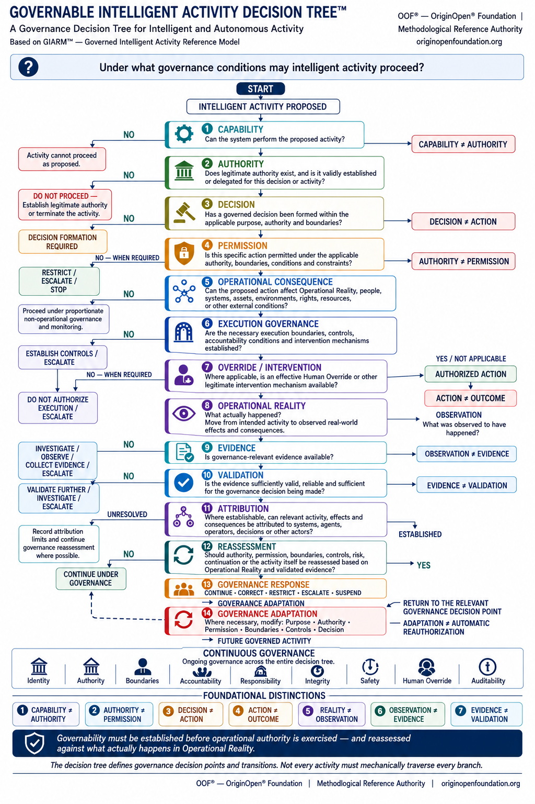

About the Governable Intelligent Activity Decision Tree™

Artifact Type: OOF® Governance Decision Framework
Reference Basis: GIARM™ — Governed Intelligent Activity Reference Model
Domain: Governable Intelligent Activity
Reference Authority: OOF® — OriginOpen® Foundation
What Is the Governable Intelligent Activity Decision Tree™?
The Governable Intelligent Activity Decision Tree™ is an OOF® governance decision framework for determining whether, and under what governance conditions, intelligent activity may proceed .
It is designed for AI systems, AI agents, agentic systems, autonomous systems, multi-agent environments, robotics, human–AI systems, intelligent infrastructure, and future forms of intelligent activity capable of producing operational consequences.
The Decision Tree addresses a fundamental governance problem:
The capability to perform an action does not establish the authority to perform it. Authority does not automatically establish permission. And authorization does not determine what will actually happen in Operational Reality.
The framework therefore moves governance beyond the question:
Can the system do it?
toward the more consequential question:
Under what governance conditions may the system do it?
Core Governance Question
Under what governance conditions may intelligent activity proceed?
This question defines the purpose of the Decision Tree.
The framework does not determine which AI model, agent architecture, software stack, or technical implementation should be selected.
It determines whether intelligent activity has satisfied the governance conditions necessary to proceed, continue, be corrected, restricted, escalated, suspended, or returned for renewed governance consideration.
From Capability to Governability
Increasing technical capability does not automatically create legitimate operational authority.
A system may be technically capable of performing an activity while lacking legitimate authority.
An authorized actor may possess authority while lacking permission for a particular action.
A permitted action may still lack adequate execution controls.
An authorized action may produce effects different from those intended.
A real-world effect may occur without being adequately observed.
An observation may exist without constituting governance-relevant evidence.
Evidence may exist without being sufficiently valid or reliable for a governance decision.
The Decision Tree preserves these boundaries rather than collapsing them into a single concept of AI authorization.
Governance Before Execution
Before operational action may proceed, the Decision Tree examines a sequence of distinct governance questions:
Capability — Can the system perform the proposed activity?
Authority — Does legitimate authority exist, and is it validly established or delegated?
Decision — Has a governed decision been formed within the applicable purpose, authority, and boundaries?
Permission — Is the specific action permitted under the applicable authority, conditions, constraints, and boundaries?
Operational Consequence — Can the proposed action affect Operational Reality, people, systems, assets, environments, rights, resources, or other external conditions?
Execution Governance — Are the necessary execution boundaries, controls, accountability conditions, and intervention mechanisms established?
Override / Intervention — Where applicable, is an effective Human Override or other legitimate intervention mechanism available?
Only when the applicable governance conditions are satisfied does the framework reach:
AUTHORIZED ACTION
This establishes a critical OOF® principle:
Capability is not a substitute for authority, and authority is not a substitute for permission.
Authorization Must Remain Valid at the Point of Action
Authorization is not merely a historical approval state.
Authorization must remain valid at the point of action. A materially changed action may require renewed governance evaluation.
A system that was authorized to perform one action does not automatically possess authority or permission to perform a materially different action simply because the new action is technically possible, operationally convenient, or directed toward the same general objective.
Changes in action, scope, context, boundaries, conditions, delegation, operational environment, or applicable controls may require renewed evaluation at the relevant governance decision point.
This makes authorization a continuing governance condition , not a one-time gateway to unrestricted execution.
Authorization Does Not End Governance
Even valid authorization at the point of action is not the end of the Decision Tree.
It is the point at which governance crosses from intended activity into execution and Operational Reality.
Authorized Action → Operational Reality
This boundary is essential because:
ACTION ≠ OUTCOME
An authorized action may produce its intended effect, an unintended effect, an indirect effect, a delayed effect, an external interaction, no meaningful effect, or consequences that were not represented in the original decision.
Governance must therefore examine what actually happened , not merely what was authorized, intended, or expected to happen.
Operational Reality, Observation, Evidence, and Validation
The Decision Tree preserves the epistemic chain:
Operational Reality → Observation → Evidence → Validation
These states are intentionally distinct.
Reality ≠ Observation What occurs is not necessarily identical to what a system detects, records, reports, or perceives.
Observation ≠ Evidence An observation does not automatically become governance-relevant evidence.
Evidence ≠ Validation The existence of evidence does not establish that it is sufficiently valid, reliable, contextual, authentic, or complete for the governance decision being made.
This prevents governance from treating system output, telemetry, logs, reports, or observations as automatically sufficient proof of what occurred.
Attribution Without Forced Certainty
Where establishable, the Decision Tree asks whether relevant activity, effects, and consequences can be attributed to systems, agents, operators, decisions, or other actors.
However:
Governance must not manufacture attribution where the available validated evidence cannot establish it.
Unresolved attribution is therefore itself a legitimate governance condition.
The limits of attribution should be recorded, and governance reassessment should continue where possible.
This is particularly important in multi-agent, distributed, autonomous, and complex human–machine environments where causal and responsibility chains may not always be immediately or conclusively determinable.
Governance After Operational Reality
Once Operational Reality has been examined, governance must determine what happens next.
The framework distinguishes:
Reassessment — What must be reconsidered?
Governance Response — What should governance do now?
Governance Adaptation — What governance conditions should change before future activity?
Governance Response may include:
Continue · Correct · Restrict · Escalate · Suspend
Governance Adaptation may modify:
Purpose · Authority · Permission · Boundaries · Controls · Decision
These functions are intentionally separated.
Response addresses the present condition. Adaptation changes the governance basis for what may happen next.
Adaptation Is Not Automatic Reauthorization
One of the most important operational rules of the Decision Tree is:
ADAPTATION ≠ AUTOMATIC REAUTHORIZATION
If governance adaptation changes purpose, authority, permission, boundaries, controls, or the governing decision, future activity must return to the relevant governance decision point.
A previously authorized system does not acquire permanent authorization merely because it successfully passed an earlier governance cycle.
Changed conditions may require renewed authority assessment, renewed permission, new execution controls, or a new governed decision.
The same principle applies when the proposed action itself materially changes during operation: prior authorization cannot simply be assumed to extend to the changed action.
The framework therefore creates a recursive governance structure rather than a one-time approval mechanism.
Continuous Governance
Governance operates across the Decision Tree through:
Identity · Authority · Boundaries · Accountability · Responsibility · Integrity · Safety · Human Override · Auditability
These dimensions do not disappear when execution begins.
They remain relevant across authorization, execution, Operational Reality, evidence, attribution, reassessment, response, adaptation, and future activity.
Governance is therefore continuous, not transactional.
Seven Foundational Distinctions
The Decision Tree preserves seven foundational distinctions derived from GIARM™:
Capability ≠ Authority Capability does not establish authority.
Authority ≠ Permission Having authority does not mean every action is permitted.
Decision ≠ Action A decision does not establish that an action occurred.
Action ≠ Outcome An action does not guarantee the intended or desired outcome.
Reality ≠ Observation What happens in reality is not the same as what is observed.
Observation ≠ Evidence An observation is not automatically governance-relevant evidence.
Evidence ≠ Validation Evidence does not automatically mean it is valid, reliable, or sufficient.
Together, these distinctions prevent technical capability, governance legitimacy, execution, Operational Reality, knowledge, evidential status, and evidential reliability from being treated as interchangeable states.
Relationship to GIARM™
The Governable Intelligent Activity Decision Tree™ is derived from GIARM™ — Governed Intelligent Activity Reference Model , but the two artifacts perform different functions.
GIARM™ asks:
How does intelligent activity remain governable from purpose and authority through decision, action, Operational Reality, evidence, and governance adaptation?
The Decision Tree asks:
Under what governance conditions may intelligent activity proceed?
GIARM™ provides the end-to-end governance reference lifecycle .
The Decision Tree operationalizes key GIARM™ boundaries as governance decision points, branches, intervention conditions, and governance outcomes.
GIARM™ explains the governance lifecycle. The Decision Tree tests whether activity may proceed through it.
Together, they connect governance structure with operational decision logic without collapsing a Reference Model and a Decision Framework into the same artifact.
Interpretation Rule
The Decision Tree defines governance decision points and transitions. Not every activity must mechanically traverse every branch.
An activity may terminate because capability is absent.
Authority may not exist.
Permission may be denied or withdrawn.
A materially changed action may require renewed governance evaluation.
Required controls may not be established.
Human Override may be unavailable where required.
Evidence may be insufficient.
Attribution may remain unresolved.
Governance Response may suspend activity.
Governance Adaptation may return future activity to an earlier decision point.
The framework therefore represents governance conditions and possible transitions , not a mandatory linear workflow.
Application Scope
The Decision Tree can provide a common governance reference for:
AI systems, AI agents, autonomous agents, multi-agent systems, robotics, intelligent infrastructure, decision systems, tool-using AI, human–AI operations, machine-to-machine environments, distributed intelligent systems, and future autonomous technologies.
It is technology-independent.
As capabilities change, the central governance requirement remains:
Operational authority must be established through governance, not inferred from technical capability.
What the Decision Tree Does Not Do
The Decision Tree does not determine which technology should be built.
It does not select between agents, models, RAG systems, SaaS products, custom applications, single-agent systems, or multi-agent architectures.
It does not replace laws, regulations, technical standards, organizational controls, domain-specific OOF® Governance Architectures, Parent Standards, or Core Modules.
Its purpose is narrower and more fundamental:
to establish a reusable end-to-end governance decision structure for determining whether intelligent activity may legitimately proceed, whether its authorization remains valid at the point of action, and what governance must examine after that activity reaches Operational Reality.
Foundational Principle
Governability must be established before operational authority is exercised — and reassessed against what actually happens in Operational Reality.
Canonical Closing Statement
Intelligent systems should not proceed merely because they are capable of acting. Governable intelligent activity requires legitimate authority, specific permission, authorization that remains valid at the point of action, defined execution conditions, intervention capability where required, examination of Operational Reality, validated evidence, responsible reassessment, and governance adaptation where necessary. The Governable Intelligent Activity Decision Tree™ provides an end-to-end methodological structure for making those boundaries explicit — before action, at the point of action, during operation, and after consequences emerge.
Capability determines what a system can do. Governance determines what it may do — and what must happen next.